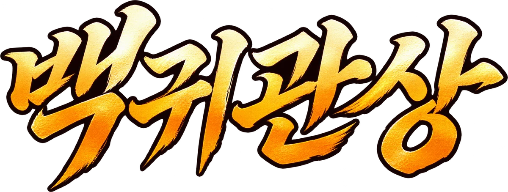
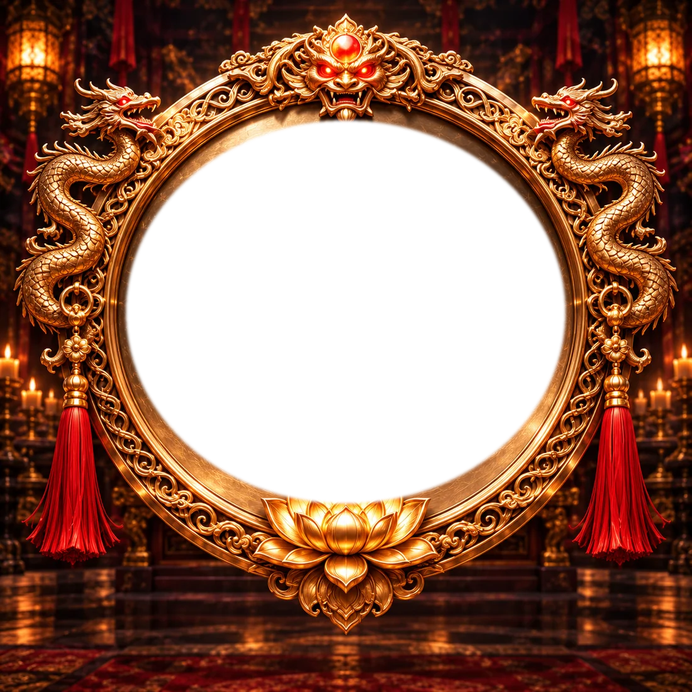
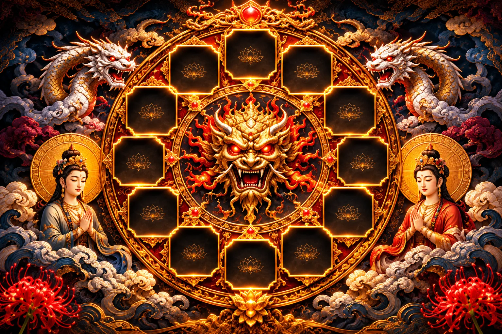

원광법사의 제자 · 圓安法師
얼굴에 새겨진 기운을 읽어
타고난 성향과 운의 흐름을 살핍니다
…저, 오셨네요. 거울을 하나 들고 있는데요…
백귀는 거울에 비친 것으로만 드러나서… 그래서, 얼굴을 한 번 비춰주셔야 해요. 괜찮으시면요…
역사·설화를 바탕으로 재구성한 디지털 점찰 콘텐츠입니다.
올리신 사진은 이 기기 안에서만 쓰이고 어디에도 올라가지 않습니다.
| | |
첫째 마디 · 묻기
나이와 성별부터
여쭙겠습니다…
얼굴에는 나이마다 자리가 정해져 있어요. 유년운기부위라고 하는데… 몇 살인지를 알아야 올해 운이 어느 자리에 걸렸는지 짚을 수 있어서요.
…그리고 남녀가 세는 방향이 반대라서요. 죄송한데 둘 다 여쭐게요.
짝이 있는 자리는 남녀가 보는 쪽이 반대라서, 먼저 여쭙니다.
먼저 성별을 골라 주세요.
둘째 마디 · 비추기
정면·민낯, 흰빛 도는 자리에서요

사진은 이 기기 안에서만 쓰이고 어디에도 올라가지 않습니다.
셋째 마디 · 읽기
셋째 마디 · 지나간 자리
…얼굴에 점이나 흉, 파인 자리가 있으면
사진 위에서 그 자리를 한 번 짚어주세요.
넷째 마디 · 고르기
셋 중에 하나를
골라보시겠어요…?
…그냥, 보시고 제일 마음이 걸리는 쪽으로요. 틀려도 괜찮아요. 아니, 틀리는 게 더 나을지도…
다섯째 마디 · 열두 자리
얼굴에 열두 자리가 있고
자리마다 하나씩 서 있어요…
자리를 눌러 보세요. 서 있는 것이 비켜주면 풀이가 열립니다.
다섯째 마디 · 복채
열한 자리가
아직 봉해져 있어요…
…제가 저것들하고 말을 좀 섞어야 하는데요. 그게, 그냥은 안 비켜줘서…
이거까지만 봐드릴 테니, 손님도 마음을 정하셔야 해요…
아직 결제가 연결되지 않았습니다. 값은 빠지지 않습니다.
여섯째 마디 · 흥정
첫째 · 점자리
점을 찍어 보겠습니다
아래 손잡이를 오른쪽으로 밀면 법사가 짚은 자리에 점이 하나씩 찍힙니다. 찍기 전과 찍은 뒤를 견주어 보세요.
손잡이를 밀어 보세요
둘째 · 색
셋째 · 머리
넷째 · 차례와 기한
무엇부터, 얼마 동안
맺음 · 백귀도
열두 칸이
손님의 자리로 채워졌어요.

붉게 도는 칸이 올해를 쥔 우두머리입니다.
맺음 · 총평
얼굴은 그릇, 때는 사주
…여기까지가 얼굴입니다. 그릇은 다 봤어요.
그런데 때는 얼굴에 적혀 있지 않아서요. 몇 월에 움직이고 몇 월에 멈출지까지는 위에 적어드렸지만, 올해가 손님 인생에서 어느 대목인지는 생년월일을 봐야 압니다.
이용안내 · 환불
어떤 서비스인가
백귀관상은 올리신 얼굴 사진을 바탕으로 마의상법·유장상법의 십이궁(十二宮), 삼정(三停), 오행형상(五行形相), 기색(氣色), 유년운기부위(流年運氣部位)를 대입해 풀이를 보여 드리는 디지털 콘텐츠입니다.
역사와 설화를 바탕으로 재구성한 읽을거리이며, 미래의 사건이나 초자연적 존재를 객관적으로 확정하지 않습니다. 의료·법률·투자 판단의 근거로 쓰지 마십시오.
복채(결제)
- 얼굴을 읽어 드리는 데까지와 열두 자리 중 한 자리는 값 없이 보여 드립니다. 어느 자리가 열리는지는 손님 얼굴에 따라 달라집니다. 나머지 열한 자리와 처방(점자리·길한 색·머리 모양)·백귀도는 3,990원에 열립니다.
- 얼굴과 사주를 맞대어 보는 교차 풀이(연애·금전·직장사업·이동수)는 9,900원이며, 위 3,990원과 별개의 상품입니다.
- 3,990원은 여는 날 기념값입니다. 기념 기간이 끝나면 정가 5,900원으로 올리며, 값이 바뀌기 전에 이 쪽에 먼저 적습니다.
- 단건 결제이며 자동 갱신이나 정기 결제는 없습니다.
- 한 번 복채를 내시면 그 기기의 브라우저에서는 다시 내지 않으셔도 됩니다. 다만 얼굴 사진을 저장하지 않으므로, 풀이를 다시 보시려면 얼굴을 한 번 더 비춰 주셔야 합니다. 브라우저 기록을 지우거나 다른 기기에서 여실 때는 다시 결제해야 합니다.
- 결제는 결제대행사를 통해 처리되며, 본 서비스는 카드번호 등 결제수단 정보를 보관하지 않습니다.
환불
- 결제 즉시 디지털 콘텐츠가 제공되므로, 봉인을 해제해 풀이를 열람하신 뒤에는 환불이 어렵습니다. (전자상거래법 제17조 제2항 제5호)
- 결제 전 명궁 한 자리를 무료로 먼저 보여 드리는 것으로 시험 사용을 갈음합니다. (같은 법 제17조 제6항)
- 결제했으나 풀이를 열람하지 않은 경우, 결제일로부터 7일 이내 전액 환불해 드립니다.
- 9,900원 교차 풀이도 같습니다. 생년월일을 넣고 풀이가 뜬 뒤에는 환불이 어렵고, 결제만 하고 풀이를 받지 않으셨다면 7일 이내 전액 환불합니다.
- 오류·중복결제·미제공 등 서비스 쪽 사유일 때는 열람 여부와 관계없이 전액 환불합니다.
- 환불 요청은 아래 문의처로 결제일시와 결제수단을 적어 보내 주십시오. 영업일 기준 3일 안에 처리합니다.
얼굴 사진
- 올리신 사진은 이용자의 기기 안에서만 처리됩니다. 서버로 전송되지 않고, 저장되지 않으며, 창을 닫으면 사라집니다.
- 따라서 본 서비스는 얼굴 사진을 수집하거나 보관하지 않습니다.
- 본인이 아닌 사람의 사진, 특히 만 14세 미만 아동의 사진은 올리지 마십시오.
문의
ja9746@naver.com · 1866-0423
개인정보처리방침
1. 얼굴 사진을 수집하지 않습니다
백귀관상은 이용자가 올린 얼굴 사진을 서버로 전송하지 않습니다. 사진 판독은 전부 이용자의 기기(브라우저) 안에서 이루어지며, 판독이 끝난 뒤에도 사진은 기기를 벗어나지 않습니다. 창을 닫으면 사진과 판독 결과는 모두 사라집니다.
그러므로 회사는 얼굴 사진, 얼굴에서 뽑은 수치, 그에 따른 풀이 내용을 보관하지 않습니다.
2. 처리하는 개인정보와 목적
- 나이·성별: 유년운기부위를 셈하는 데에만 쓰이며, 기기 안에서만 처리되고 저장되지 않습니다.
- 결제 정보(결제일시, 금액, 주문번호, 승인번호): 결제 확인과 환불 처리. 카드번호 등 결제수단 정보는 결제대행사가 처리하며 회사는 보관하지 않습니다.
- 문의 내역: 문의에 답하기 위해 보내 주신 이메일 주소와 내용.
- 접속 기록: 서비스 운영과 오류 확인을 위한 최소한의 기록.
- 기기 안의 복채 표시: 복채를 내신 뒤 같은 브라우저에서 다시 내지 않으셔도 되도록, 주문번호와 결제 시각을 그 기기의 브라우저 저장소(로컬 스토리지)에만 남깁니다. 서버로 보내지 않으며, 브라우저 저장 자료를 지우시면 함께 사라집니다.
3. 보유 기간
- 대금 결제 및 재화 공급에 관한 기록: 5년 (전자상거래법)
- 소비자 불만 또는 분쟁 처리에 관한 기록: 3년 (전자상거래법)
- 문의 내역: 처리 완료 후 1년
- 보유 기간이 지난 정보는 지체 없이 파기합니다.
4. 처리 위탁
- 결제대행사: 결제 처리 (결제 연동 시 업체명을 이곳에 적습니다)
- 호스팅: 서비스 운영을 위한 서버 제공
5. 이용자의 권리
이용자는 자신의 개인정보에 대해 열람·정정·삭제·처리정지를 요구할 수 있습니다. 아래 문의처로 연락 주시면 지체 없이 처리합니다.
6. 개인정보 보호책임자
온미라이프 · ja9746@naver.com · 1866-0423
사업자 정보
- 상호: 온미라이프
- 고객센터: 1866-0423
- 이메일: ja9746@naver.com
- 대표자 · 사업자등록번호 · 주소 · 통신판매업 신고번호: 준비 중
- 판 번호: — (새로고침해도 이 번호가 그대로면 옛 판을 보고 계신 겁니다)
통신판매업 신고와 결제 연동을 마친 뒤 이 자리를 채웁니다. 그 전까지는 실제 결제가 일어나지 않습니다.
얼굴과 사주를 맞대어
언제 태어나셨는지
여쭙겠습니다.
얼굴은 라고 봤습니다. 거기에 손님 사주를 맞대 볼게요.
…시는 모르셔도 됩니다. 아시면 더 정확하고요.
음력으로 아시면 달력에서 양력으로 바꿔 넣어 주세요.
전국 일괄 30분을 당겨 셉니다. 야자시는 일주를 그날 그대로 두고 시주만 다음 날로 봅니다.
아직 결제가 연결되지 않았습니다. 값은 빠지지 않습니다.
얼굴과 사주